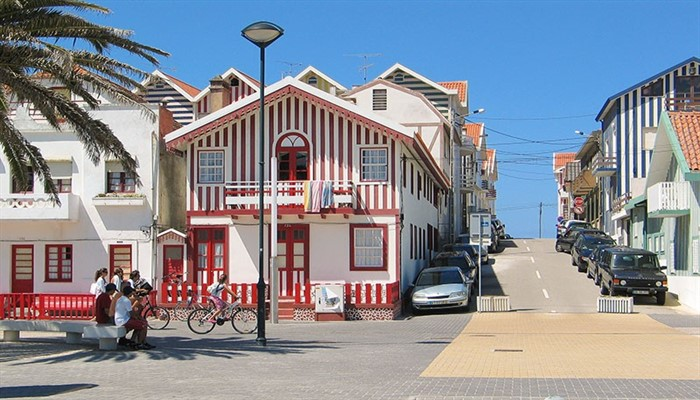

Orta Portekiz’in Atlantik Kıyısını kucaklayan Aveiro, genellikle “Portekiz’in Venediği” olarak da biliniyor. Bunun sebebi de tahmin edilebileceği gibi şehir içinde bulunan harika kanallar ve o kanalların üzerindeki köprüler. Rengârenk gondollar, botlar kanallar arasında dolaşırken şehrin tarihi bölgelerini ziyaret edebilir ve muhteşem sahillerin tadını çıkartabilirsiniz. Aveiro’yu popüler yapan bir diğer unsur da mutfağı, dolayısıyla burada damak zevkinize uygun bir şeyler mutlaka bulacaksınız.
orto'ya 68, Coimbra'ya 58 km uzaklıkta bulunan Aveiro, Atlas Okyanusu kıyısında bir lagün çevresinde kurulmuş. Bu nedenle merkezi okyanustan biraz uzak. Şehrin Venedik'e benzetilmesine neden olan pek çok yapay kanal açılmış ve küçük teknelerin okyanustan lagüne, lagünden de şehrin içlerine dek girmesi sağlanmış. Büyük bir limana sahip olan Aveiro, geçmişte de günümüzde de Portekiz'in önemli ticaret şehirlerinden biri olmuş.
Aveiro'da ufak bir tren istasyonu bulunuyor. Porto'dan kalkan ve güney yönüne giden trenlerin pek çoğu burada duruyor. İstasyon binası geleneksel mavi Portekiz çinileriyle kaplı şirin bir yapı. Tarihî şehir merkezinin yaklaşık 1 km uzağında. Yürüme mesafesi olarak 10 dk sürüyor. Taksi ya da otobüs beklemeye gerek yok zira çıkar çıkmaz önünüzde bulacağınız büyükçe caddeyi izlediğinizde şehrin merkezine varacaksınız. Yol üstünde yerlilerin gittiği kafe ve restoranlar bulunuyor. Kahvaltı ve öğle yemeği için buraları tercih edebilirsiniz
Tüm büyük Portekiz kentlerinde olduğu gibi Aviero'da da bir Sé yani Katedral bulunuyor. Barok tarzda inşa edilen mabedin çok da bir özelliği olmadığını itiraf etmeliyim. (Barok mimarinin özellikleri ile ilgili ipuçları için bu yazıyı okuyun derim) Katedralin hemen yanındaki Convento do Jesús (İsa Manastırı) günümüzde Aveiro Müzesi olarak kullanılıyor. Igreja da Misericordia (Merhamet Kilisesi) ve Câmara Municipal (Belediye Binası) da Aviero'nun görmeye değer renkli yapılarından